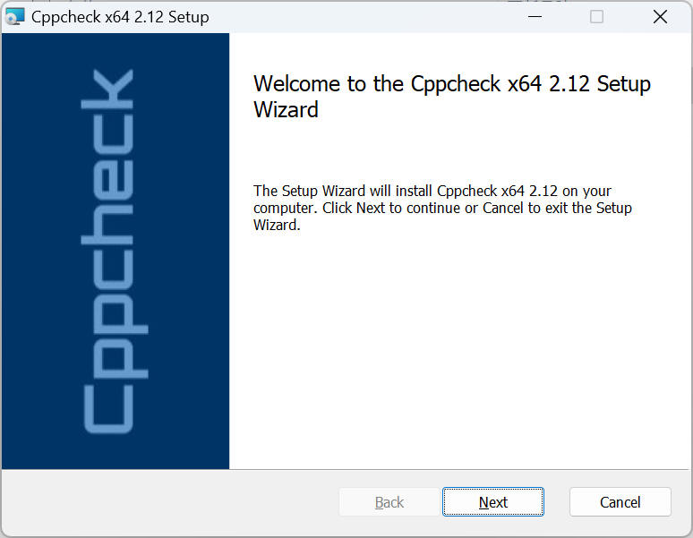
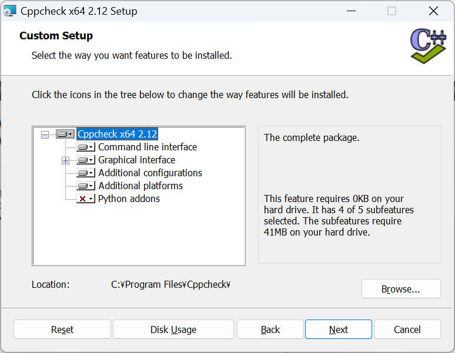
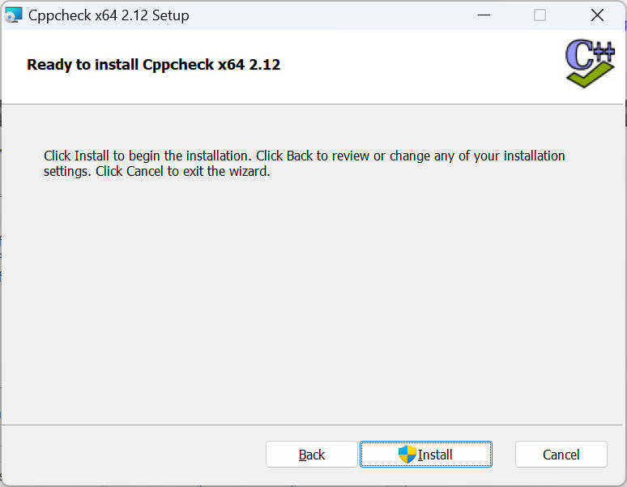
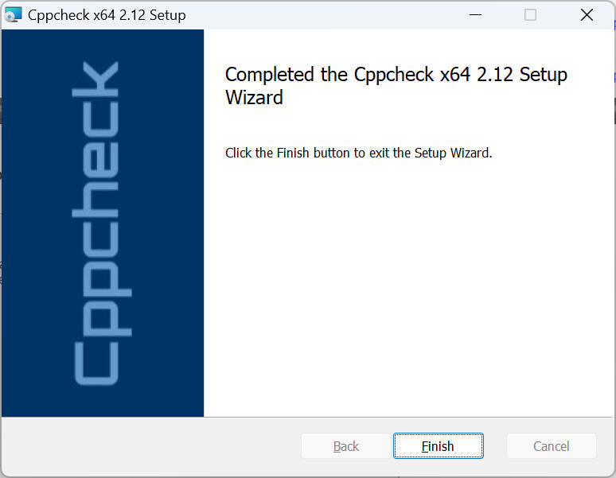
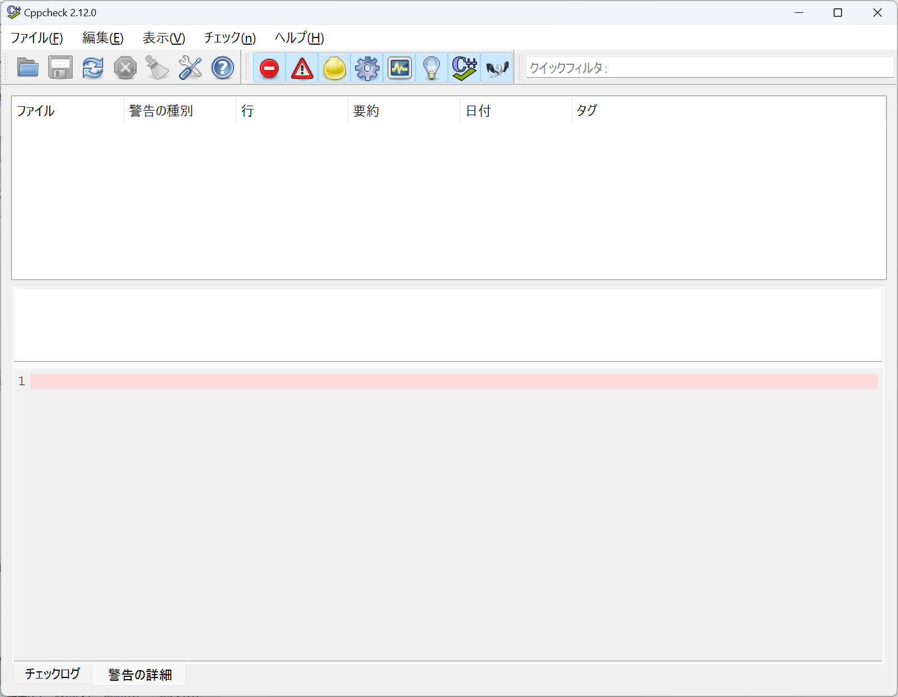
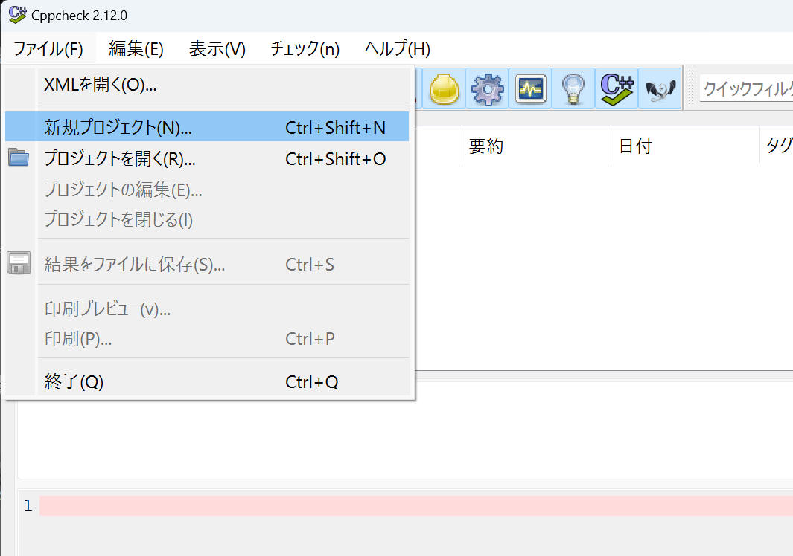
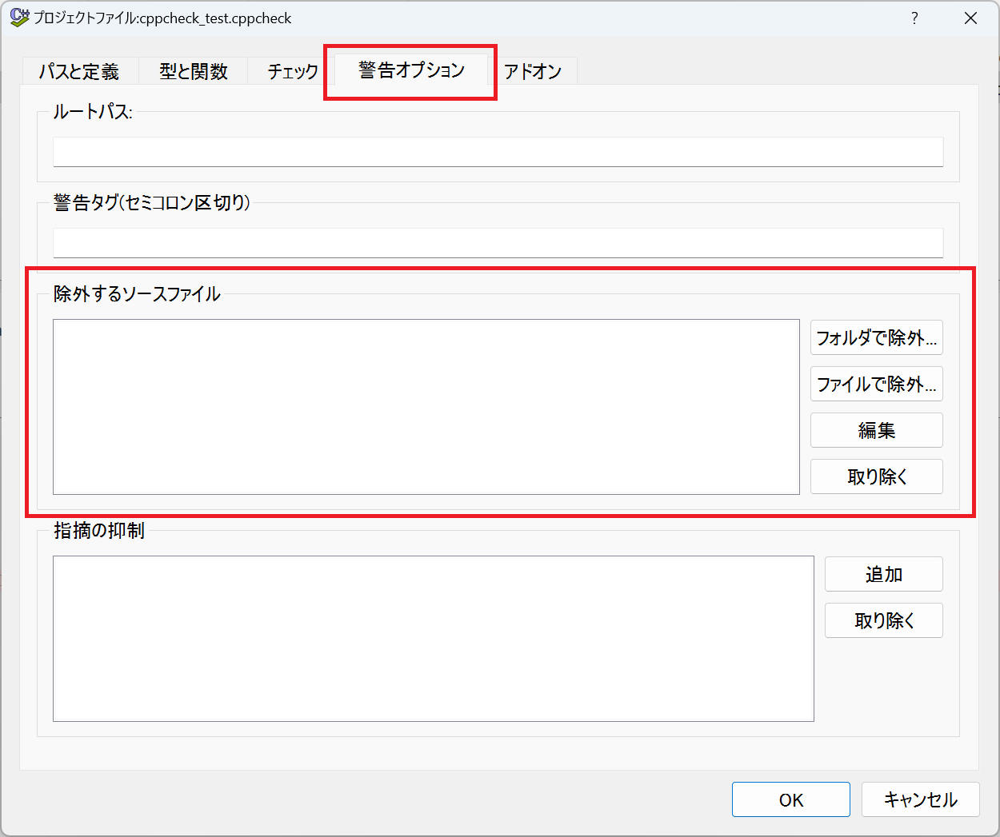

Cppcheck は、無料で使える C および C++ プログラミング言語用の静的コード分析ツールです。作成者兼主任開発者は Daniel Marjamäki です。 Cppcheckは、GNU General Public License に基づくフリーソフトウェアです。
本ページでは、cppcheck の使い方などについて記載してみたいと思います。
Windows 環境へインストールする手順について記載します。
1. 下記ULRからインストーラーを入手します。
Cppcheck - A tool for static C/C++ code analysis (sourceforge.io)
本ページ記載時のバージョンは 2.12 でした。
2. インストーラーを実行します。
デフォルトで問題ありません。必要に応じて、インストール場所の変更、"Python addons" の追加、等を行います。




以上でインストール完了です。
cppcheck は様々なパッケージマネージャーからインストール可能です。使用されている Linux 環境に従って下記コマンドを実行します。
Devian / Ubuntu
sudo apt-get install cppcheck
Fedrea
sudo yum install cppcheck
Mac
brew install cppcheck
GUI 版の使用方法について記載します。
1. cppcheck を起動します。
最初から日本語で表示してくれました。

2. メニューの [ファイル(F)] → [新規プロジェクト(N)...] でプロジェクトを作成します。

ファイルダイアログが表示されるので、保存するプロジェクトファイルのファイル名を指定します。
その後、プロジェクトの設定画面（下図）が出てくるので、「パス」 に解析を行うソースファイルの場所を設定します。
「インクルードパス」には boost など外部ライブラリーのヘッダー所在を指定します。指定しなくてもチェックできるようですが、指定した方がより良い解析結果を出力してくれるようです。
解析対象から除外するファイルは下記画面中の「除外するソースファイル」へ登録することで行います。

これらのプロジェクトの設定を後から修正したい場合は [プロジェクトの編集(E)] のメニューを選ぶことでと同じダイアログを表示できます。
3. 下記のようなテストプログラムを作成し、これを cppcheck で解析してみます。
[test.cpp]
#include <iostream>
void foo(int x)
{
int buf[10];
if (x == 1000){
buf[x] = 0; // <- ERROR
}
}
int main()
{
foo(1000);
return EXIT_SUCCESS;
}
プロジェクトの新規作成後に [OK] でダイアログを閉じたり、プロジェクトを開くとチェックが始ります。 または「全ファイル再解析(y)」ボタンをクリックすることでも解析を実施してくれます。
解析結果は以下の通りです。ERROR の場所を「Array indel out of bounds.」とちゃんと検出してくれました。
CUI 版の使用方法について記載します。
Jenkins や Pipelines などの各種 CI/CD ツールと連携させたい場合などでは CUI(コマンドライン) を使って解析します。
CUI は次の形式で実行します。
$ cppcheck --enable=all ソース [...]
引数としてチェック対象のソースファイルやファイルのあるフォルダーを指定します。フォルダーの場合は再帰的にチェックします。
GUI の結果をみるとわかりやすいと思いますが、 cppcheck の検査項目はカテゴリー分けされています。--enable オプションでそのカテゴリーを指定し、all ですべてのカテゴリーが検査対象となります。--enable を指定していないと検査項目が何もないことになるので、 とりあえず all をつけて使い始め、慣れてきたら必要とする検査項目のみに限定してはいかがでしょうか。
"--enable" オプションで指定できるパラメータは以下の通りです。
| パラメータ | 説明 |
|---|---|
| all | 全てのチェックを有効にします。 (例) cppcheck --enable=all file.c |
| warning | warning のチェックを有効にします。 |
| style | style を指定すると warning, performance, portability, style のチェックを有効にします。 |
| performance | performance のチェックを有効にします。 |
| portability | portability のチェックを有効にします。 |
| information | information のチェックを有効にします。 |
| unusedFunction | unusedFunction のチェックを有効にします。 |
| missingInclude | missingInclude のチェックを有効にします。 |
パラメータを複数組み合わせて指定する場合、以下のようにカンマ区切りで併記します。
cppcheck --enable=warning,performance file.c
注意
unusedFunction チェックは、関数が呼び出されなかったときに警告するチェックなので、プログラム全体をチェックするときのみ "--enable=unusedFunction", "--enable=all" を使用することを推奨します。関数呼び出しがチェック範囲にみつからなかった、という警告を不要に出力する可能性が高くなるからです。
| オプション | 機能 |
|---|---|
| --enable |
検査カテゴリーを指定します
|
| -h, --help | ヘルプ表示 |
| -q, --quiet | ログを出さない(解析結果だけ表示) |
| -I | インクルードフォルダーのパスを指定 |
| -D | define を指定 |
| -i | 除外するファイルやフォルダーの指定 |
| --xml | 解析結果の出力を xml 形式にする |
| --platform | 適用する c/c++ 標準を指定する
(例) --platform=unix64 |
| --std |
適用する c/c++ 標準を指定する
(例) --std=c++20 |
| --project |
いくつかのプロジェクトファイルやビルド設定を Cppcheck にインポートできます。
|
| --suppress |
警告出力を抑制します
|
| --inline-suppr |
ソースコード内へ直接記載する インライン抑制 です。 cppcheck のコマンドライン引数に "--inline-suppr" を追加したうえで、ソースコード内に抑制内容を記載します。 ソースコード内への記載例を以下に記載します。
// 特定の警告を抑制する例
void legacyFunction() {
// cppcheck-suppress uninitvar
int x; int y = x + 1;
}
// 複数の警告を抑制
void testFunction() {
// cppcheck-suppress [uninitvar,nullPointer]
char* ptr = nullptr;
*ptr = 'a';
}
// 複数行のコードを対象に警告を抑制 - Suppressing warnings aaaa on a block of code:
// cppcheck-suppress-begin uninitvar
...
// cppcheck-suppress-end uninitvar
// 複数行のコードを対象に複数の警告を抑制 - Suppressing multiple ids on a block of code:
// cppcheck-suppress-begin [uninitvar,nullPointer]
...
// cppcheck-suppress-end [uninitvar,nullPointer]
|
GUI と同じ下記テストコードを解析してみます。
[test.cpp]
#include <iostream>
void foo(int x)
{
int buf[10];
if (x == 1000){
buf[x] = 0; // <- ERROR
}
}
int main()
{
foo(1000);
return EXIT_SUCCESS;
}
下記コマンドで解析します。Windows の場合は事前に path を登録して cppcheck を使えるようにしておいてください。
$ cppcheck --enable=all --suppress=missingIncludeSystem --platform=win64 --std=c++20 test.cpp
実行結果は以下の通りです。
C:\Users\foo\Documents\cpp\cppcheck_test>cppcheck --enable=all --suppress=missingIncludeSystem --platform=win64 --std=c++20 test.cpp
Checking test.cpp ...
test.cpp:7:12: warning: Either the condition 'x==1000' is redundant or the array 'buf[10]' is accessed at index 1000, which is out of bounds. [arrayIndexOutOfBoundsCond]
buf[x] = 0; // <- ERROR
^
test.cpp:6:11: note: Assuming that condition 'x==1000' is not redundant
if (x == 1000){
^
test.cpp:7:12: note: Array index out of bounds
buf[x] = 0; // <- ERROR
^
test.cpp:5:9: style: The scope of the variable 'buf' can be reduced. [variableScope]
int buf[10];
^
test.cpp:7:16: style: Variable 'buf[x]' is assigned a value that is never used. [unreadVariable]
buf[x] = 0; // <- ERROR
^
Active checkers: 163/565
C:\Users\foo\Documents\cpp\cppcheck_test>
GUI 版と同じ解析結果を出力できていることを確認できました。
メモリリーク、の例として下記ソースコードを cppcheck で解析してみます。
["sample_01.cpp"]
#include <iostream>
void memoryLeakExample() {
int* ptr = new int(10); // メモリの確保
ptr[0] = 20; // メモリにアクセス
// delete ptr; // 解放を忘れている
}
int main(){
memoryLeakExample(); // メモリリークが発生する
// delete ptr; // ここで解放しても意味がない
return 0;
}
下記コマンドで解析します。
$ cppcheck --enable=all --suppress=missingIncludeSystem --platform=unix64 --std=c++20 sample_01.cpp
実行結果は以下の通りです。
"sample_01.cpp" の7行目で ptr がメモリリークしていることを検出しています。
$ cppcheck --enable=all --suppress=missingIncludeSystem --platform=unix64 --std=c++20 sample_01.cpp
Checking sample_01.cpp ...
sample_01.cpp:7:1: error: Memory leak: ptr [memleak]
}
^
初期化されていない変数、の例として下記ソースコードを cppcheck で解析してみます。
["sample_02.cpp"]
#include <iostream>
void uninitializedVariableExample() {
int x; // 初期化されていない
int y = x + 10; // 未初期化変数を使用
}
int main() {
uninitializedVariableExample(); // 未初期化変数の使用
return 0;
}
下記コマンドで解析します。
$ cppcheck --enable=all --suppress=missingIncludeSystem --platform=unix64 --std=c++20 sample_02.cpp
実行結果は以下の通りです。
変数 x を未初期化であることを検出しています。
$ cppcheck --enable=all --suppress=missingIncludeSystem --platform=unix64 --std=c++20 sample_02.cpp Checking sample_02.cpp ... sample_02.cpp:5:13: error: Uninitialized variable: x [uninitvar] int y = x + 10; // 未初期化変数を使用 ^ sample_02.cpp:5:11: style: Variable 'y' is assigned a value that is never used. [unreadVariable] int y = x + 10; // 未初期化変数を使用
条件文の論理的誤り、の例として下記ソースコードを cppcheck で解析してみます。
["sample_03.cpp"]
#include <iostream>
void logicalErrorExample() {
int a = 5;
if (a == a) { // この条件は常に真
std::cout << "This will always be true" << std::endl;
}
}
int main() {
logicalErrorExample(); // 論理エラーの例
return 0;
}
下記コマンドで解析します。
$ cppcheck --enable=all --suppress=missingIncludeSystem --platform=unix64 --std=c++20 sample_03.cpp
実行結果は以下の通りです。
条件文の論理的誤り を検出しています。
$ cppcheck --enable=all --suppress=missingIncludeSystem --platform=unix64 --std=c++20 sample_03.cpp
Checking sample_03.cpp ...
sample_03.cpp:5:11: style: Same expression on both sides of '=='. [duplicateExpression]
if (a == a) { // この条件は常に真
本ページの情報は、特記無い限り下記 MIT ライセンスで提供されます。
| 2025-05-21 | - | 「3._解析結果の例」を追加 |
| 2025-05-06 | - | "--inline-suppr"オプションに関する記載を追記 |
| 2024-08-25 | - | "--project" オプションに関する記載を追記 |
| 2023-12-21 | - | 新規作成 |